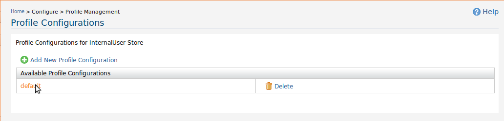
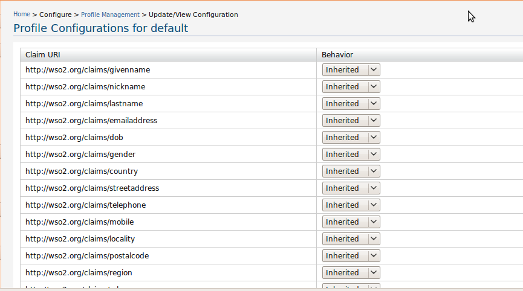

The Profile Configuration Management component of the WSO2 Carbon allows to add/modify and delete profile configuration. The profile configuration controls how user's empty claim values behave in his profile. If a Claim in a user's profile is not given a value explicitly, then it is given a value based on the following configuration.

Figure 1: User Profile Management
Use the Add New Profile Configuration link to add new user accounts.
Note: The feature of adding new profile configuration is only supported with JDBC user store. Since now the default user store of carbon is based on LDAP, this feature is not supported by default.
To delete profiles configuration use Delete link. Click on the profile name to add/edit profile configuration.

Figure 2: Add/Edit profile configuration